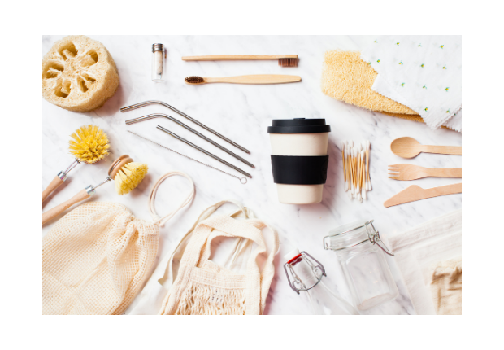

Hello friends! Let’s take some time to think about our reducing our waste.
According to the Environmental Protection Agency reducing and reusing are the most effective ways to save natural resources, protect our environment, and save money. Kyle and I think it’s important to be environmentally conscious and we do all we can to reduce our impact on the environment on a daily basis. It can be intimidating to think consciously about your everyday choices, but taking it one day at a time can really help. For that reason Kyle and I thought of 5 easy things for you to start with today without having to spend anything.
1) Use What You Have

Probably the most important thing you can do for the environment is to use what you already have! When I began to think more consciously, I constantly found reusable alternatives that I wanted to buy immediately. But realistically for my space, my wallet, and the planet, I needed to use what I had first and then buy the more environmentally sustainable choice. This could apply to working through your stash of beauty products, using the last of your environmentally harmful cleaning products, or using up all the single-use straws in the house.
2) Reuse Your Glass

Kyle and I made the decision to use mason jars for glasses a few years ago and we have never looked back. One problem with having so many mason jars on hand is that it was easy for me to just grab a clean one every time I wanted a new drink. This can lead to water waste as you are making more dirty jars faster and washing your dishes more often. Instead, I now keep my cup with me all day and give it a quick rinse in the sink in between drinks. Try being more mindful of this throughout the day and even challenge yourself to use a particular cup the entire day. It’s actually a lot easier than you may think.
3) Wear Your Clothes More Than Once

You most likely don’t wash your jeans or bra every single time you wear them and this can apply to other items of clothing as well. Washing items more often and in heavy loads can increase water waste and shorten the life of your clothing. I used to come home and throw my clothes in the dirty bin without even thinking about if I could hang them up and wear them again. I now find that I can wear a shirt 2 or 3 times without washing depending on if I worked up a sweat while it was on. Not only will this tip help the environment, but it will save you from doing a ton of laundry all the time too!
4) Start Recycling Properly

Reduce your waste by knowing what you can and cannot actually throw in your recycling bin. Putting items that are dirty or don’t belong can hinder and sometimes even ruin the recycling facilities process and machines. Here is an amazing post covering most of what you didn’t know about how your recycling habits could be harmful, but the big idea is to clean your recyclables and pay attention to what your local recycling collection takes. Check with your city’s website page to see what types of recyclables they accept and find out where you can recycle the types they don’t such as plastic Amazon mailers and plastic packaging. Often times stores like Walmart, Home Depot, or other large chain stores will have boxes collecting the special plastic recyclables at their entrance, making it easy to drop off your stash when you visit those stores.
5) Do Your Reusables Research!

In point 1 I mentioned finding a bunch of reusable items that I wanted before I made the decision to use what I have. It is important to use what you have and not buy something new, but what is also important is knowing what better choice you will make once your unsustainable option is used up. Make a mental note or even go as far as making a Google Doc with links to items you could use in the future. It was a lot easier for me to know what I was going to buy when I ran low on something rather than having to buy the same thing out of urgency because I ran out. Earth Hero is a great place to start looking for alternatives as they are essentially a zero-waste Amazon. They are also a B Certified Corporation and a part of 1% For The Planet which is amazing. Some notable swaps I had on my list and made are these toothbrushes made from recycled yogurt cups, this bra made from recycled water bottles, and these resusable sandwich bags.
I hope these ideas helped you friend! If you have any questions or comments I would love to see them below!